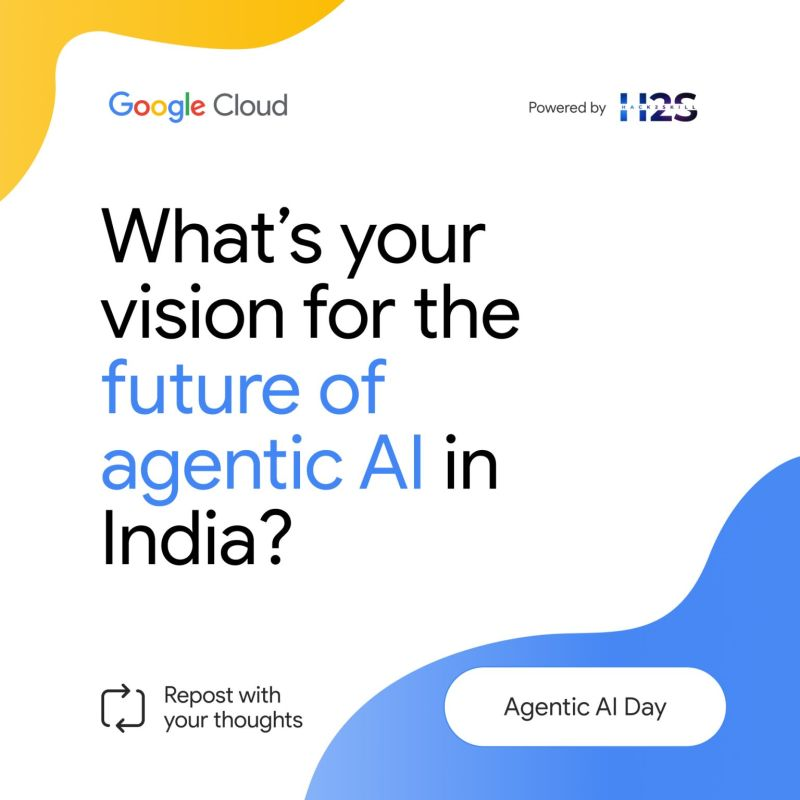

My Vision for the Future of Agentic AI in India
As someone who has spent over two decades at the intersection of cloud architecture, software engineering, and systems integration, I see Agentic AI not just as the next wave of intelligent systems, but as a catalyst for inclusive transformation across India's core sectors.
In a country as diverse and populous as ours, traditional automation and rule-based AI have limits. But Agentic AI, with its autonomy, goal-oriented reasoning, and contextual decision-making, offers a path to scale human-like intelligence without compromising on ethics, safety, or adaptability.
🚑 Healthcare
Agentic AI can act as a virtual health assistant in rural PHCs, dynamically adapting to patient needs, triaging symptoms, guiding ANMs or ASHAs with contextual protocols, and escalating only when human intervention is truly needed. It won't replace doctors, it will extend their reach where none currently exist.
🎓 Education
In multi-grade classrooms where one teacher handles students from different levels, Agentic AI can act as a personalised tutor and classroom assistant, tailoring learning paths, gauging engagement in real time, and offering differentiated instruction. This will uplift Bharat's foundational literacy and bridge the urban-rural digital gap.
🏙️ Urban Governance & Safety
From traffic management to crowd control at large events like Kumbh Mela or IPL matches, Agentic AI can simulate, reason, and intervene in real-time. It can act as a swarm of intelligent agents managing surveillance, emergency routing, resource distribution, and even predicting potential risks before they escalate.
🌱 Agriculture & Sustainability
Farmers today need more than static advisory apps, they need continuous, context-aware guidance. Agentic AI can function as a "Kisan Saathi" that learns from soil conditions, market signals, weather patterns, and local language cues to guide cropping patterns, pest control, and even financial planning, all in a conversational, mobile-first manner.
India's Unique Advantage
With our vibrant developer ecosystem, deep public datasets (e.g., India Stack, PM Gati Shakti), and digital public goods model, we are uniquely positioned to build ethically aligned, scalable, and context-aware Agentic AI systems, by India, for India, and for the world.
Agentic AI is not just about smarter machines, it's about empowering humans, amplifying decision-making in complex environments, and doing so in a culturally grounded, inclusive way. With thoughtful design, responsible deployment, and open collaboration, I believe we can unlock exponential value, not just in GDP terms, but in human potential upliftment at scale.